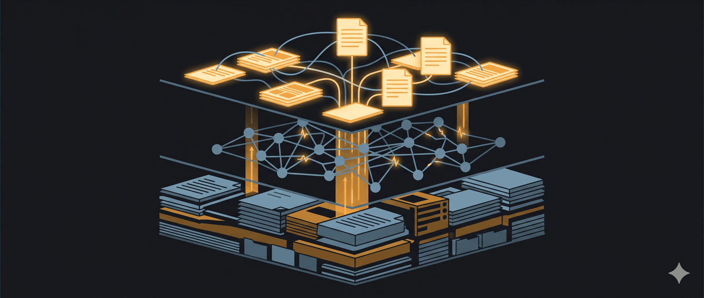

Phân tích pattern LLM Wiki viral của Karpathy, từ personal setup đến multi-agent knowledge base.
Cuối tuần vừa rồi, Andrej Karpathy có đăng một tweet:
Karpathy, người đặt ra thuật ngữ “vibe coding”, giờ nói rằng phần lớn token của anh ấy không còn đổ vào code nữa, mà đổ vào kiến thức. Tweet viral ngay lập tức. Ngày hôm sau, anh ấy đăng tiếp một thứ gọi là “idea file” lên GitHub Gist, mô tả chi tiết architecture đằng sau. Gist đó đạt 2,600+ stars và 500 forks chỉ trong ngày đầu tiên.
Cái khiến mình thấy hay không phải là tooling hay workflow cụ thể. Mà là cách Karpathy đặt lại câu hỏi: LLM dùng để làm gì?

Wiki thay vì RAG
Hầu hết mọi người dùng LLM với documents theo kiểu RAG: upload file lên → hỏi câu hỏi → LLM tìm chunks liên quan rồi trả lời. NotebookLM, ChatGPT file uploads, và hầu hết enterprise AI tools đều chạy theo pattern này.
Vấn đề mà Karpathy chỉ ra: mỗi lần hỏi, LLM phải tìm lại kiến thức từ đầu. Không có gì tích lũy. Hỏi một câu cần tổng hợp từ 5 tài liệu, nó phải lắp ghép lại mỗi lần. Hỏi lại ngày mai, nó lại làm y hệt.
Không phải không ai nhận ra. Một số người đã tự build memory layer, maintain context files, hay dùng schema file để agent không “mất trí nhớ” mỗi session mới. Nhưng phần lớn vẫn đang dùng LLM theo kiểu hỏi-đáp rồi quên.
Cách của Karpathy khác hẳn. Thay vì chỉ index tài liệu rồi retrieve lúc cần, anh ấy để LLM “compile” chúng thành một wiki có cấu trúc. Khi thêm source mới, LLM không chỉ lưu nó để tra sau, mà đọc, trích xuất thông tin quan trọng, rồi tích hợp vào wiki hiện tại: cập nhật entity pages, sửa summary, ghi nhận chỗ nào data mới mâu thuẫn với data cũ.
Kiến thức được compile một lần rồi duy trì liên tục, không bị derive lại mỗi lần hỏi.
Kiến trúc 3 lớp
Karpathy mô tả hệ thống gồm 3 lớp rất rõ ràng:
Raw sources là thư mục raw/ chứa tài liệu gốc: articles, papers, repos, datasets, hình ảnh. LLM chỉ được đọc, không bao giờ được sửa. Đây là source of truth duy nhất.
Wiki là thư mục wiki/ chứa toàn bộ file markdown do LLM tạo và maintain: summaries, entity pages, concept pages, comparisons, overview. LLM lo phần viết và bookkeeping, bạn lo phần đọc và spot-check. Cần correct thì sửa trực tiếp file hoặc bảo LLM sửa lại.
Schema là file cấu hình (CLAUDE.md nếu dùng Claude Code, AGENTS.md nếu dùng Codex) nói cho LLM biết wiki được tổ chức thế nào, conventions ra sao, workflow khi ingest source mới, khi trả lời câu hỏi, khi maintain wiki. File này biến LLM từ một chatbot generic thành một wiki maintainer có kỷ luật.

Karpathy có một analogy rất đắt: “Obsidian is the IDE; the LLM is the programmer; the wiki is the codebase.”
Lúc trước mình thật sự chưa bao giờ nghĩ về chúng theo cách này. Nhưng gần đây, sau khi anh TonyB có chia sẻ về cách anh ấy dùng Obsidian với LLMs, mình đã ngộ ra nhiều điều và cũng đang đi theo hướng setup Obsidian trở thành second brain giúp LLMs hiểu context hơn mỗi khi tìm kiếm hay nhớ lại lần trước đã làm gì. Thật tình cờ, hướng đi đó giống với idea mà Karpathy vừa share.
Ba operations cốt lõi

Ingest: bạn thả source mới vào raw/, bảo LLM xử lý. LLM đọc, thảo luận key takeaways với bạn, tạo summary page, cập nhật index, cập nhật các entity và concept pages liên quan, ghi log. Một source có thể ảnh hưởng tới 10-15 wiki pages. Karpathy nói anh ấy thích ingest từng source một và tham gia trực tiếp vào quá trình. Nhưng bạn cũng có thể batch-ingest với ít giám sát hơn.
Query: bạn hỏi wiki, LLM tìm pages liên quan, đọc, tổng hợp câu trả lời. Điểm quan trọng: những câu trả lời hay có thể được “lưu lại” thành wiki page mới. Một comparison bạn hỏi, một analysis, hay một connection bạn phát hiện — tất cả đều có giá trị và không nên biến mất vào chat history. Đây là một compounding loop: không chỉ sources được ingest, mà chính những explorations của bạn cũng tích lũy dần trong knowledge base.
Lint: định kỳ bạn yêu cầu LLM health-check toàn bộ wiki. Tìm mâu thuẫn giữa các pages, phát hiện claims cũ đã bị sources mới thay thế, các orphan pages không được liên kết tới, hoặc những concepts được nhắc nhiều nhưng chưa có page riêng. LLM cũng có thể gợi ý các câu hỏi mới để tiếp tục mở rộng và làm sâu knowledge base.
index.md thay thế RAG (ở quy mô vừa)
Một chi tiết practical mà mình thấy nhiều người bỏ qua: ở quy mô ~100 sources, vài trăm wiki pages, bạn không cần over-engineer với vector database hay embedding pipeline. LLM chỉ cần đọc file index.md (catalog tất cả pages với one-line summary), tìm pages liên quan, rồi drill xuống đọc chi tiết.
Khi wiki lớn hơn, Karpathy recommend qmd, một search engine chạy local cho markdown files do Tobi Lütke (CEO Shopify) build, kết hợp BM25 keyword search, vector semantic search, và LLM re-ranking. Tất cả chạy on-device, không gửi data ra ngoài.
Concept “idea file”: share ý tưởng thay vì share code
Có lẽ điều thú vị nhất trong cả câu chuyện này không phải là architecture, mà là cách Karpathy chọn share nó.
Anh ấy không đăng GitHub repo. Không publish npm package. Không ship Docker image. Anh ấy share một “idea file”, một file markdown mô tả pattern ở mức trừu tượng, được thiết kế để bạn copy-paste cho LLM agent của mình, rồi agent sẽ build implementation phù hợp với setup cụ thể của bạn.
Karpathy dùng Obsidian trên macOS với Claude Code. Bạn có thể dùng VS Code trên Windows với Codex. Với một shared repo, bạn phải fork, chỉnh sửa, rồi debug để phù hợp với setup của mình. Còn với idea file, bạn chỉ cần paste cho agent — phần còn lại agent sẽ build cho bạn.
Anh ấy nói thẳng trong gist:
The document’s only job is to communicate the pattern. Your LLM can figure out the rest.
nghĩa là document này cố tình giữ ở mức abstract, vì có quá nhiều hướng để phát triển.
Đây là một dạng open source mới. Không open code, mà open ideas.
Community đã phản ứng thế nào?
Gist của Karpathy lên Hacker News, VentureBeat đưa tin, hàng chục implementation xuất hiện trong 24 giờ.
Comment mình thấy đáng đọc nhất đến từ user @bluewater8008 trên gist: anh ấy chỉ ra rằng câu “the LLM owns this layer entirely” nghe ổn cho personal use, nhưng quá aggressive cho team hoặc high-accuracy contexts. LLM nên đóng vai editor đề xuất patches, không phải final authority. Cần tách rõ facts, inferences, và open questions.
VentureBeat cũng dẫn comment của Krishna Tammireddy (@tammireddy):
Karpathy đồng ý với nhận định này.
Về phía tooling, community đã ship rất nhanh:
Architecture & diagrams:
- DAIR.AI tạo interactive diagram breakdown toàn bộ architecture, hover vào từng component để xem chi tiết: https://academy.dair.ai/blog/llm-knowledge-bases-karpathy
- @himanshu trên X visualize 3 stages (ingest → compile → lint):
- @jumperz build “Swarm Knowledge Base” diagram cho multi-agent setup với Quality Gate
Implementations:
- sage-wiki: Go binary chạy cross-platform, có compile/query/lint/MCP server
- obsidian-seed + mnemon: wizard tạo vault + extraction pipeline với 7 templates theo loại source
- karpathy-llm-wiki skill: plug-and-play skill cho Claude Code/Cursor/Codex, cài bằng
npx add-skill - wiki-skills: implement dưới dạng skill files
- crate: Python CLI reference implementation (compile/ask/lint/ingest)
Lưu ý quan trọng: Đây là tài liệu tham khảo, không phải template để copy nguyên. Karpathy nói rõ: idea file cố tình abstract vì mỗi người sẽ cần setup khác nhau tùy domain, tool, và cách làm việc. Cách tốt nhất là đem idea file gốc + những references này feed cho agent của bạn, để nó giúp bạn planning một version phù hợp với use cases thực tế của bạn. Đừng over-engineer ngay từ đầu. Bắt đầu với 10 sources, một topic, rồi evolve từ đó.
Vannevar Bush và giấc mơ Memex từ năm 1945
Karpathy kết thúc gist bằng một reference lịch sử khá hay:
The idea is related in spirit to Vannevar Bush’s Memex (1945) — a personal, curated knowledge store with associative trails between documents. Bush’s vision was closer to this than to what the web became: private, actively curated, with the connections between documents as valuable as the documents themselves. The part he couldn’t solve was who does the maintenance. The LLM handles that.
Năm 1945, Bush mô tả Memex như một hệ thống lưu trữ kiến thức cá nhân, nơi các tài liệu được liên kết với nhau bằng “associative trails”. Đây là một hệ thống private, được curate chủ động, nơi các connections giữa documents có giá trị ngang với chính documents. Tầm nhìn này thực ra gần với LLM Wiki hơn là thứ mà web trở thành: public, hỗn loạn, và thiếu cấu trúc.
Điểm Bush không giải được là maintenance. Ai sẽ tạo các liên kết, cập nhật chúng, và giữ toàn bộ hệ thống nhất quán theo thời gian?
Đây chính là chỗ LLM xuất hiện. LLM không chán, không quên cập nhật cross-reference, và có thể cập nhật tới hàng chục files trong một lượt. Khi chi phí maintenance gần như bằng 0, một wiki sống trở thành khả thi.
Mình rút ra được gì?
Vài suy nghĩ sau khi đọc xong cả tweet, gist, và community reactions:
Trước hết, có một shift rõ ràng: từ “dùng LLM để hỏi đáp” sang “dùng LLM để build knowledge infrastructure”. Mình đã thấy xu hướng này từ trước, nhưng Karpathy là người articulate nó rõ nhất.
Thứ hai, pattern này không đòi hỏi tooling phức tạp. Markdown files, một LLM agent, Obsidian (hoặc bất kỳ markdown viewer nào), và git là đủ. Không cần vector database hay embedding pipeline — ít nhất là ở quy mô cá nhân.
Thứ ba, concept “idea file” có thể quan trọng hơn cả architecture mà nó mô tả. Khi ai cũng có LLM agent, share pattern trở nên portable hơn share code. Đây là một hướng mình sẽ theo dõi kỹ trong thời gian tới.
Nhưng đi kèm với đó là một lưu ý quan trọng: wiki do LLM maintain có thể rất thuyết phục, nhưng chưa chắc đã đúng. Nếu bạn thử pattern này, hãy xây dựng thói quen spot-check (kiểm tra lại) kỹ càng.
LLM là writer. Bạn vẫn là editor-in-chief
Từ personal wiki đến multi-agent knowledge base: GoClaw
Karpathy mô tả workflow của mình như một setup cá nhân: một LLM agent, một người dùng, Obsidian mở bên cạnh. Nhưng câu hỏi tự nhiên là: pattern này scale thế nào khi bạn muốn nhiều agent cùng đóng góp vào một knowledge base? Hoặc khi bạn muốn wiki được maintain bởi agent chạy trên Telegram, Discord, Slack thay vì chỉ trong terminal?
Đây là chỗ mà GoClaw, dự án open-source mà mình đang contribute, trở nên phù hợp.
GoClaw là một AI agent gateway viết bằng Go. Nó cho phép bạn chạy nhiều AI agent kết nối với các kênh nhắn tin (Telegram, Discord, WhatsApp, Zalo, Slack, Larksuite), trong khi share tool, memory, và context trong cùng một workspace. Mỗi agent có thể dùng provider khác nhau (OpenAI, Anthropic, Google, DeepSeek, Groq…), có tool riêng, và quan trọng nhất, có thể delegate task cho agent khác.
Nếu map vào kiến trúc 3 lớp của Karpathy:

Schema layer → GoClaw có hệ thống context files (AGENTS.md, SOUL.md, IDENTITY.md) hoạt động y hệt CLAUDE.md/AGENTS.md mà Karpathy mô tả. Mỗi agent load context files này mỗi session, biết convention, biết workflow, biết mình nên làm gì.
Raw sources → GoClaw hỗ trợ nhiều tools tích hợp sẵn bao gồm file system, web search, browser automation, và MCP server. Agent có thể tự clip web articles, đọc PDF, lấy data. Bạn cũng có thể feed source qua Telegram hoặc Slack, gửi link cho agent rồi bảo nó ingest.
Wiki layer → Với Skills System có hybrid search (BM25 + vector) và Knowledge Graph tích hợp sẵn (trích xuất entity/relationship bằng LLM với graph traversal), GoClaw đã có sẵn infrastructure cho việc build và query một knowledge base có cấu trúc.
Nhưng phần thú vị nhất là khả năng orchestration. GoClaw hỗ trợ 4 pattern: delegation (sync/async), team, handoff, và evaluate loop. Bạn có thể setup một “wiki team” gồm nhiều agent chuyên biệt: agent ingest chuyên đọc và tóm tắt source, agent lint chuyên kiểm tra consistency, agent query chuyên trả lời câu hỏi phức tạp. Mỗi agent dùng model phù hợp (Haiku cho ingest nhanh, Opus cho synthesis phức tạp). Cron jobs cho phép lên lịch lint tự động hàng ngày.
VentureBeat có đề cập đến một architecture tương tự từ @jumperz khi dùng OpenClaw để build “Swarm Knowledge Base” với 10 agent, trong đó có một “Quality Gate” dùng Hermes model để validate mọi draft article trước khi promote vào wiki chính. Pattern này giải quyết đúng vấn đề mà @bluewater8008 nêu ra: epistemic integrity khi LLM tự viết wiki.
Nếu bạn muốn thử pattern LLM Wiki ở quy mô lớn hơn personal, hoặc muốn agent của mình chat được qua Telegram/Slack thay vì chỉ trong IDE, GoClaw là một option đáng thử.
→ GitHub: https://github.com/nextlevelbuilder/goclaw
→ Docs: https://docs.goclaw.sh
🔍 Phân tích bài viết
📌 Tóm tắt ý chính
Bài phân tích pattern “LLM Wiki” của Andrej Karpathy: thay vì dùng RAG (retrieve mỗi khi hỏi), để LLM “compile” kiến thức thành wiki có cấu trúc sống — mỗi source mới được tích hợp vào entity pages, concept pages, và summary đã có. Kiến trúc 3 lớp: raw sources (chỉ đọc), wiki (LLM viết và maintain), schema/CLAUDE.md (hướng dẫn workflow). Ba operations: ingest, query, lint. Điểm khác biệt lớn: không cần vector database ở quy mô ~100 sources, chỉ cần index.md và drill-down.
🗺️ Mindmap
LLM Wiki (Karpathy Pattern)
├── Vấn đề RAG: mỗi lần hỏi = tìm lại từ đầu, không tích lũy
├── Giải pháp: Compile once, maintain continuously
├── Kiến trúc 3 lớp
│ ├── raw/ (sources gốc, LLM chỉ đọc)
│ ├── wiki/ (LLM viết: summaries, entities, concepts)
│ └── CLAUDE.md/AGENTS.md (schema + workflow rules)
├── 3 operations
│ ├── Ingest (tích hợp source mới)
│ ├── Query (tổng hợp có citations)
│ └── Lint (health-check, tìm mâu thuẫn)
├── Scale: index.md thay RAG đến ~100 sources
└── Analogy: "Obsidian = IDE; LLM = programmer; wiki = codebase"
💡 Insight & Góc nhìn đa chiều
Điểm sắc nhất: “idea file” là dạng open source mới — không share code, share ideas. Karpathy không đăng repo, không push Docker image — chỉ share markdown mô tả pattern ở mức trừu tượng để mỗi người build implementation phù hợp với setup của họ. Đây là hướng mà AI sẽ phát triển: khi ai cũng có LLM agent, share pattern portable hơn share implementation.
Comment quan trọng nhất từ @bluewater8008: LLM nên là editor đề xuất patches, không phải final authority. Cần tách facts, inferences, và open questions — tức là wiki do LLM maintain cần explicit epistemic labels. Vault CLIPPING-VAULT này đang implement chính xác pattern đó (raw clippings + wiki synthesis + mâu thuẫn được flag).
⚖️ Phản biện
- “Không cần vector database ở quy mô cá nhân” có thể không đúng lâu dài: Khi wiki đạt 500+ pages, index.md không còn đủ. Karpathy tự đề cập qmd — nhưng đây là thêm dependency, phức tạp hóa setup.
- LLM compile wiki có thể tạo ra “hallucinated synthesis”: Khi integrate source mới, LLM có thể tạo ra connections không tồn tại trong nguồn — đặc biệt nguy hiểm cho wiki về facts kỹ thuật hay y tế. “Spot-check” của người dùng là yêu cầu, không phải optional.
- Pattern này đòi hỏi discipline cao: Ingest từng source một, review wiki changes, chạy lint định kỳ — đây không phải passive automation. Người dùng casual sẽ bỏ cuộc sau vài tuần.
❓ Câu hỏi mở
- Khi wiki đạt ngưỡng nào thì nên chia nhỏ thành nhiều sub-wiki chuyên biệt thay vì một wiki lớn?
- Làm sao xử lý khi hai sources đáng tin cậy mâu thuẫn nhau — LLM nên làm gì, lưu cả hai hay resolve?
- Multi-agent wiki (GoClaw pattern) có thực sự tốt hơn single-agent hay chỉ thêm complexity mà không đáng?
🇻🇳 Liên hệ Việt Nam
Pattern này đang được một số KOL tech VN promote (AI Việt, GenZ AI…) nhưng hầu hết dừng ở mức “dùng NotebookLM upload file rồi hỏi” — đây là RAG, không phải LLM Wiki. Sự khác biệt about compounding: RAG không tích lũy, LLM Wiki tích lũy. Người VN nào implement đúng pattern này sẽ có knowledge base cá nhân ngày càng sâu và có giá trị — competitive advantage thực sự.
📖 Giải thích thuật ngữ
- RAG (Retrieval-Augmented Generation): AI tìm kiếm tài liệu liên quan rồi dùng để trả lời — như Google search nhưng thông minh hơn. Không tích lũy giữa các lần hỏi.
- LLM Wiki: AI biên soạn và duy trì một wiki có cấu trúc liên tục — kiến thức được tích hợp và cross-reference, không bị retrieve lại từ đầu mỗi lần
- Epistemic integrity: Tính toàn vẹn nhận thức — phân biệt rõ đâu là fact đã được verify, đâu là inference của LLM, đâu là câu hỏi chưa có đáp án
- Memex (Vannevar Bush, 1945): Thiết bị cá nhân lưu trữ kiến thức với “associative trails” — tầm nhìn từ 1945 mà LLM Wiki đang hiện thực hóa